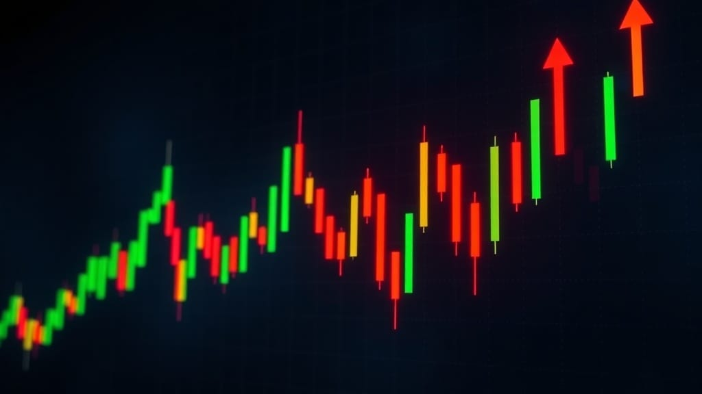

What Is Stock Volatility and How to Handle It
Stock volatility explained for 2026 — what standard deviation, beta and VIX really mean. 5 practical rules to stop panic-selling during market drops.
Z Zar · 26 May 2026 — 6 min read

Disclosure: ZarWealth uses Amazon and other affiliate links throughout this article. We receive a small commission on qualifying purchases, at no additional cost to you. This helps keep ZarWealth free of paywalls and intrusive ads. Always do your own research before investing.
Want to go deeper on this? See How to Invest During High Inflation.
For the full breakdown, read How to Stop Living Paycheck to Paycheck in 2026 (A Realistic Plan).
Want to go deeper on this? See What Is Dollar-Cost Averaging and How to Automate It.
Want to go deeper on this? See Best Investing Apps for Beginners in 2026.
📈 Investing Part of our Complete Investing Guide — what volatility actually means, and why most investors get it wrong.
What is stock volatility (really)?
Volatility is the size of the price swings in a stock or fund — how far it moves up and down day-to-day or month-to-month, regardless of direction. It's measured statistically as standard deviation of returns. A stock with annual volatility of 15% typically moves within ±15% of its average return in 2 out of 3 years. A stock with 40% volatility swings much wider.
The most important thing to understand: volatility is not risk. Volatility is the price of admission to long-term returns. Stocks have higher long-term returns than bonds because they're more volatile — investors demand extra return to tolerate the swings. Take away volatility and you take away the return premium.
For context: the S&P 500 has historical annual volatility around 15-18%, individual stocks 25-40%, crypto 60-100%. A "low volatility" fund still moves more than your savings account.
How volatility is measured and why you should care
Three numbers tell you almost everything: standard deviation, beta, and maximum drawdown. Standard deviation is the statistical width of returns — a 15% SD means the fund moves within ±15% of average about 68% of the time. Beta is volatility relative to the market — beta 1.0 moves with the S&P 500, beta 1.5 moves 50% more aggressively, beta 0.5 half as much. Maximum drawdown is the worst peak-to-trough loss in a given period — the S&P 500 had a max drawdown of -54% in 2008-2009.
You should care because these numbers tell you what to expect at the worst moment. If you're 60% allocated to a fund with 25% SD and that fund drops 30% in a crash, your overall portfolio loses 18%. Can you sleep through that without selling? If not, your allocation is wrong for your risk tolerance — not your fund.
For a deeper dive on the math behind these metrics, see our Sharpe ratio guide — it combines return and volatility into a single comparable number.
📘 Free Download
Get the 6-page FI Checklist PDF
A roadmap to financial independence — sent to your inbox the moment you subscribe. Plus weekly investing playbooks.
Send me the PDF →No spam. Unsubscribe anytime.
Why volatility feels worse than it actually is
Loss aversion is one of the most documented biases in behavioral finance — losing $1,000 feels roughly twice as bad as gaining $1,000 feels good. This asymmetry means even normal market volatility triggers an emotional response disproportionate to the actual financial impact. A 10% drop on a $100,000 portfolio is a $10,000 paper loss; the emotional weight feels like $20,000 of pain.
The dangerous consequence: investors check their portfolio more often when markets are down (negativity bias), confirming the loss over and over, increasing the urge to sell. Selling after a drop locks in the loss and removes you from the recovery rally that historically follows within 12-24 months. The single best volatility-handling skill is not checking your portfolio during downturns.
The Psychology of Money by Morgan Housel
How to handle volatility: the 5 practical rules
Rule 1 — match your allocation to your timeline. Money you need in less than 5 years should NOT be in volatile stocks. Money you need in 10+ years should mostly be in stocks. The mismatch is what creates panic — you sell stocks because you panicked, not because the math said to sell.
Rule 2 — automate everything. Auto-invest a fixed amount monthly into your index funds. When markets are down, your monthly contribution buys more shares; when up, fewer. This is dollar-cost averaging and it removes the emotional decision of "when to invest."
Rule 3 — diversify across asset classes. A 60/40 stocks/bonds portfolio has roughly half the volatility of 100% stocks, with about 75% of the long-term return. The bond portion isn't there for return — it's there to dampen the swings so you don't sell at the bottom.
Rule 4 — keep an emergency fund outside investments. 3-6 months of expenses in high-yield savings. This means you NEVER have to sell stocks at a loss to pay for an unexpected bill. Removes the worst forced-selling scenario.
Rule 5 — don't check your portfolio more than monthly. Daily checking literally makes you a worse investor — research by Vanguard shows portfolios checked daily produce 1.5-2% lower returns than identical portfolios checked monthly, because of behavioral selling. Set a calendar reminder for the 1st of each month and ignore it the other 29 days.
Low-volatility investing strategies that actually work
If you genuinely cannot handle market swings, there are three low-volatility strategies worth considering. First, low-volatility ETFs like USMV (iShares MSCI USA Min Vol Factor, expense 0.15%) or SPLV (Invesco S&P 500 Low Volatility, expense 0.25%). These filter the S&P 500 down to its least volatile names. Historical returns are slightly lower than the full index but with ~30% less volatility.
Second, balanced funds and target date funds built around your risk tolerance. A "60/40" balanced fund typically drops half as much as the S&P 500 in a crash. Our balanced funds explainer covers the math.
Third, covered call income strategies via funds like JEPI or JEPQ. These generate monthly income by selling call options against held stocks — the cash buffer significantly smooths the volatility ride. Trade-off: you give up some upside in roaring bull markets.
Frequently Asked Questions
What is considered high volatility for a stock?
Annual standard deviation above 30% is considered high. The S&P 500 averages 15-18%. Individual tech stocks (Tesla, Nvidia) often run 40-60%. Cryptocurrencies frequently exceed 80-100%. "High volatility" doesn't mean "bad investment" — it means you need to size the position smaller relative to your overall portfolio.
Is volatility the same as risk?
No — this is the most common confusion in investing. Volatility is short-term price movement; risk is the probability of permanent capital loss. A diversified S&P 500 index fund is highly volatile but has essentially zero risk of going to zero. A single biotech stock might be less volatile day-to-day but has real risk of bankruptcy.
How do I reduce volatility in my portfolio?
Three levers: (1) increase bond allocation — every 10% added to bonds reduces total volatility by ~6%, (2) diversify internationally with VXUS — adds non-correlated exposure, (3) hold a cash position (5-15%) that you deploy when markets drop. Combined, these can cut a 100% stock portfolio's volatility roughly in half while only sacrificing 1-2% of long-term return.
What is the VIX and should I watch it?
The VIX is the "fear index" — it measures the implied volatility of S&P 500 options over the next 30 days. Normal VIX is 12-20. Above 30 = fear/crash conditions, above 40 = panic. For long-term investors, watching the VIX is mostly noise; it's useful only if you're actively trading options. Long-term investors should ignore it.
Should I sell my investments when volatility spikes?
Almost never. Selling during high volatility (which usually means after a drop) locks in losses and removes you from the recovery. The historical pattern: VIX spikes above 40 → market recovers ~75% of losses within 12 months. The S&P 500 has positive returns in 73% of all rolling 12-month periods. Time in market beats timing the market.
Are low-volatility ETFs worth it?
For most investors, no — the slightly lower returns aren't worth the marginal volatility reduction, and a balanced fund or target date fund accomplishes the same thing more efficiently. Low-vol ETFs (USMV, SPLV) make sense only if you're specifically targeting equity exposure with reduced swings and you can't add bonds for some reason (e.g., 100% stock allocation in a specific account).
How much volatility can I stomach? How do I know?
The honest test: how did you feel in March 2020 (pandemic crash, S&P 500 -34%) or 2022 (bear market, S&P 500 -25%)? Did you check daily, lose sleep, want to sell? If yes, your allocation was too aggressive. A rough rule: if you panic at a 20% portfolio drop, your stock allocation should be 50% or less. If you sleep fine through 40% drops, you can handle 90%+ in stocks.
📊 Want the full picture?
For the broader investing roadmap from $0 to $1M, see our Complete Investing Guide — covers asset allocation, risk tolerance, and tax strategy for every life stage.
📋 The FI Checklist
Track your path to financial independence with our free FI Checklist — a one-page printable covering every step from emergency fund to 25x annual expenses.
Disclosure: ZarWealth uses Amazon and other affiliate links throughout this article. We receive a small commission on qualifying purchases, at no additional cost to you. This helps keep ZarWealth free of paywalls and intrusive ads. Always do your own research before investing.